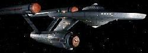

|
|
Flotta Stellare - U.S.S. Enterprise NCC-1701 |
|
|
|  |
Classe: Constitution.
Classificazione: incrociatore pesante.
Matricola Registro Flotta Stellare: NCC-1701.
Dimensioni e carico
Dimensioni totali: 289 metri di lunghezza, 127,1 metri di larghezza, 72,6 metri
di altezza.
Dimensioni della sezione a disco: 127,1 metri di diametro massimo, 32,6 metri di
altezza.
Dimensioni della sezione motori: 103,6 metri di lunghezza, 34,1 metri di
diametro massimo.
Dimensioni delle gondole FWG-1: 153,6 metri di lunghezza, 17,3 metri di
diametro.
Dislocamento: 190.000 tonnellate.
Equipaggio: 430 membri di cui 43 ufficiali.
Prestazioni
Velocità massima: Warp 12 (1728c).
Velocità di crociera: Warp 8 (512c).
Accelerazione
0 - 0,99c: 19 secondi.
0,99c - Warp: 1,1 secondi.
Warp 1 - Warp 4: 0,78 secondi.
Warp 4 - Warp 8: 0,67 secondi.
Warp 6 - Warp 12: 2,13 secondi.
Armi
3 banchi da 2 phaser ciascuno.
2 banchi di lancio siluri fotonici.
Disposizione dei servizi a bordo
Ponte 3: sala ricreativa 6 (Charlie X).
Ponte 5: alloggio di Kirk (versione refit)
(Star Trek I).
Ponte 8: armeria (The
Conscience of the King).
Ponte 12: alloggio di Janice Rand (The Enemy Within).
Ponte B: sala macchine (Court Martial).
Varie
Ci sono quattordici laboratori scientifici equipaggiati con le
attrezzature più sofisticate disponibili (Operation: Annihilate!).
|
Per attivare la Sequenza di Autodistruzione sono necessari tre Ufficiali Comandanti che devono identificarsi presso il computer indicando nome, grado e posizione e quindi devono fornire il codice di distruzione. Il computer verifica l'identità tramite la conformazione dei capillari della retina (retina scan) e l'impronta vocale. Una volta confermata l'identità e la correttezza dei codici chiede la conferma finale all'ufficiale più anziano. Ogni ufficiale anziano a bordo di una nave è a conoscenza dei tre codici di autodistruzione, ma solamente il capitano e il primo ufficiale conoscono il codice finale di conferma. Una volta fornito il corretto codice di conferma, il computer centrale inizia un conto alla rovescia di 60 secondi. Prima degli ultimi 10 secondi ognuno dei tre Ufficiali che ha impartito l'ordine di distruzione può cancellare la sequenza fornendo al computer il codice di annullamento opportuno. Quando il conteggio raggiunge lo zero si verificano uno dei due scenari previsti dalla Direttiva 2001 e dalla Direttiva 2005. I comandi di distruzione, di conferma distruzione e annullamento distruzione sono differenti per ogni tipo di nave.
Kirk: Computer, qui ammiraglio James Kirk. Richiesta accesso di
sicurezza.
Computer: ADMIRAL JAMES KIRK - IDENTITY ACKNOWLEDGED
Kirk: Computer, distruggere sequenza uno codice uno uno-A.
Scott: Computer, qui comandante Montgomery Scott, primo ufficiale degli
impianti elettronici. Distruggere sequenza due codice uno uno-A due-B.
Chekov: Computer, qui comandante Pavel Chekov, primo ufficiale
scientifico. Distruggere sequenza tre codice uno uno-B due-B tre.
Kirk: Codice zero zero zero distruzione zero.
Kirk: Computer, this is Admiral James T. Kirk. Request security
access.
Computer: Identify confirmed.
Kirk: Computer, destruct sequence one. Code one, one-A.
Chekov: Computer, this is Commander Pavel Andreievich Chekov, acting
science officer. Destruct sequence two, code one, one-A, one-B.
Scott: Computer, this is Commander Montgomery Scott, chief engineering
officer. Destruct sequence three, code one-B, two-B, three.
Computer: Destruct sequence completed and engaged. Awaiting final code
for one-minute countdown.
Kirk: Code zero, zero, zero destruct zero.
Il comando di annullamento della sequenza di autodistruzione è: Code one, two, three, Continuity. Abort Destruct
Scenario di autodistruzione per orbite planetarie o in prossimità di corpi da non distruggere:
Scenario di distruzione totale della nave. Il computer centrale della sezione tecnica disattiva ogni sistema di contenimento di sicurezza dei contenitori di stoccaggio dell'antimateria. Perciò quando il computer centrale raggiunge lo zero del conto alla rovescia, i sistemi di contenimento dell'antimateria vengono disattivati provocando un'esplosione in grado di distruggere completamente qualsiasi cosa nel raggio di 1000 Km.